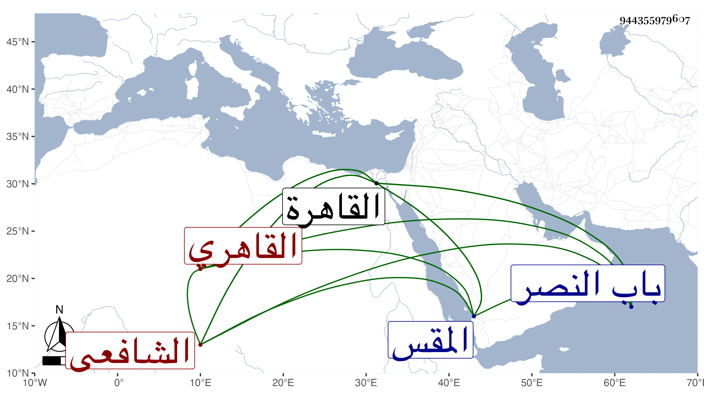

0902Sakhawi.DawLamic.ITO20230111-ara1.EIS1600.944355979607
Biography ID: 944355979607
68
علي بن محمد بن يوسف بن محمد نور الدين القاهري الشافعي نزيل المدرسة البقرية بالقرب من باب النصر ويعرف بابن القيم وبابن شقير . ولد تقريبا سنة خمس وسبعين وسبعمائة في جامع التركماني من المقس بالقاهرة وحفظ القرآن وتلا به لأبي عمرو على الفخر الضرير والشرف يعقوب الجوشني وغيرهما والمنهاج الفرعي وعرضه على الأبناسي ونصر الله الحنبلي القاضي والبدر بن أبي البقاء وابن منصور الحنفي وابن خير وغيرهم واشتغل بالفقه على الأبناسي والبدر القويسني وجماعة بالنحو على الشمس الحريري وكتب الكثير بخطه الحسن ، وحج مرارا أولها قبل القرن وسمع على التنوخي والمطرز والفرسيسي وطائفة ومما سمعه على الأول جزء أبي الجهم ، وحدث سمع منه الفضلاء وممن قرأ عليه الولوي الزيتوني بمشاركة والده الجمال عبد الله معه في التحديث ، وكان إنسانا حسنا خيرا أحد صوفية الأشرفية برسباي وقيم جامع التركماني . مات في رجب سنة ثمان وأربعين بالقاهرة رحمه الله .
